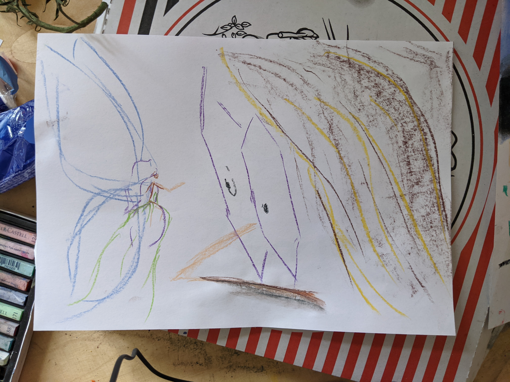
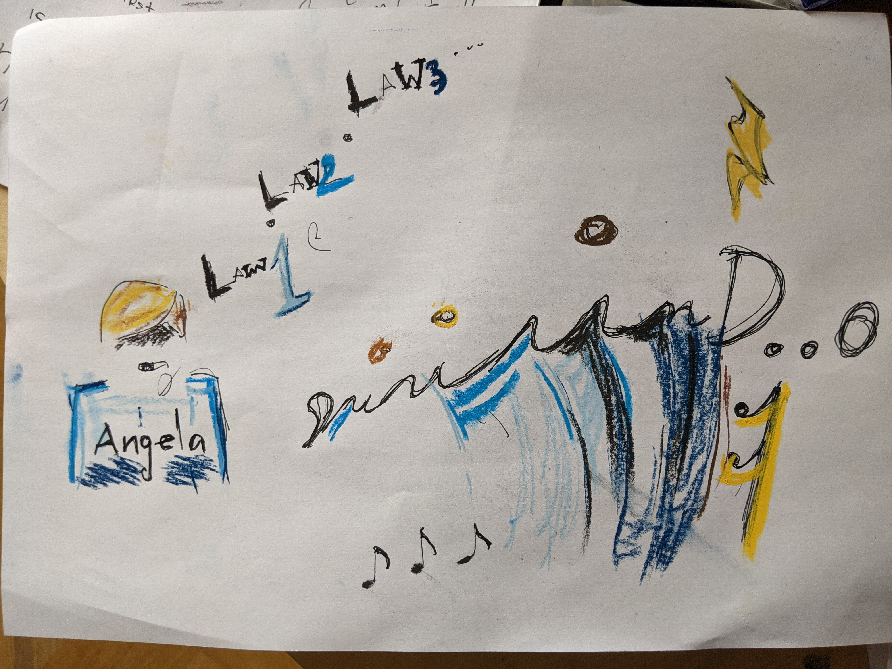
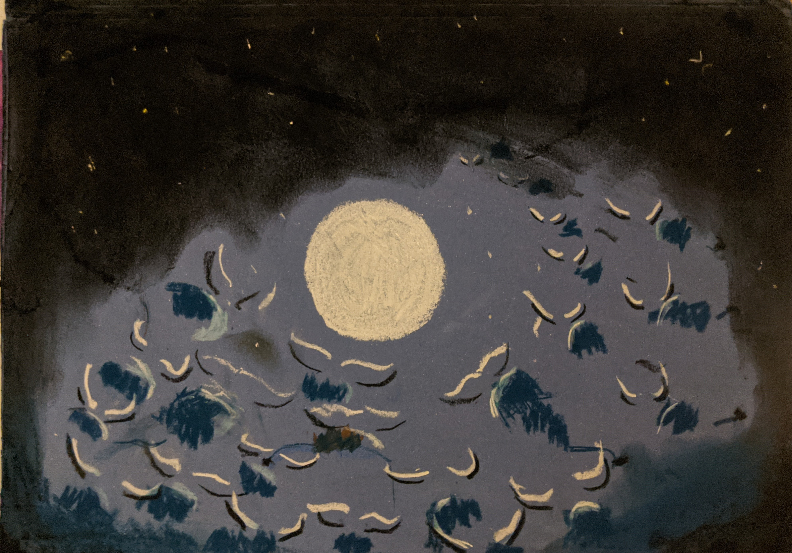

Zombie apocalypse?
Yesterday I noticed the street seemed a bit empty. In the morning I woke up to a post-apocalyptic town. There was just two or three forgotten cars.
No people. It felt surreal. I really didn't know what this meant. Did something happen? I'm not the best at following the news. I notified K.
We were supposed to meet at the bagel place to pick up some brownies. I was late, but it did not matter. The weather was amazing. I arrived almost galloping.
The mood was great - one of those days when you know things are gonna be right. We bought the brownies and walked back to my place. Still no person in sight in my street.
We each took a blotter and waited. I don't remember much of how it went at first since I'm writing this five months later.
The first memory I recall is the weird feeling I had when I proposed to start drawing.
I put the paper in front of me and felt this weird pressure caused by K's presence. It felt as if you had to shit in front of someone for the first time.
I also didn't feel inspired, since the context was "let's draw!".
At first I let K start and watched him. Then it got boring and I somehow got an idea.
I had this very clear picture of a brittish worker class dinner. There's a very silent mother and a punk kid dressed all in black sitting across from her.
The mother hoped her son would find his place in society, he could have a bright future ahead of him. On the opposite side of the table you could feel
the energy of a pair of eyes that have seen how broken the system is. How the people slowly loose any sense of what life is supposed to be and they gratefully beg
their owners for their next meal. He didn't know what his future looked like, but it was outwards. Maybe behind an explosion.
To portray the mother I remembered the bride from "Unorthodox".
I drew the lips and the veil. What was the veil ended up contouring the corset. It did not matter if it was the neck or her hips.
Her purity was captured.
I do not remember how the son ended up being just a symbol. But it's perfect. It's the angel that she sees in her mind.
Freedom on road 69
At some point we looked outside the window and it looked like a festival.
A huge crowd of people just chilling in the middle of the road. They mostly formed small groups of 2 to 5 people and there was the occasional intoxicated wanderer that moved between groups.
Three people were sitting right in the middle of the road in a lotus pose. All their hair colors were different. One of them had bright green long hair.
We would take turns at pointing at random characters and describing how ridiculous the whole scene was.
A lady in work clothes pushed a shopping cart with some fliers and moved from one group to the next. All the fliers were purple and yellow. A blonde girl was running around in really interesting
red shoes kicking an alien looking football. There was a lot of children enjoying the life of it all.
We started drawing what we saw, when I suggested that the bedroom has a bigger window. We moved all the drawing utensils onto the bed and continued drawing standing. We got lost in the process.
With an exhausted look K said
This is better than any drawing lesson!
. It felt like our own personal aquarium. We could have spent the rest of our lives drawing that scene.
There was so much happening.

A fairy
We were sitting around the table, when I looked at K. It's hard to describe now, but he looked to me like a forest fairy.
He had that aura of magic. The closest thing would be one of those characters in movies that escape from their fairy-tale universe into ours.
You can clearly tell them apart from the rest of the people.
Drawing K
as
Tinkerbell would deprive him of his identity.
Instead I decided to draw the moment he was notified of his Fairiness.
A smaller Tinkerbell sitting on the tip of his nose. The canonical scene of
you are not like the others
.

I loved how the glasses came out. The process of drawing them still feels magical to me. K was more impressed with the fairy's wings.
Capturing K felt incredible. I already knew this drawing would end up on my wall.
Toilet paper laws
As we were sitting at the table, an angry german voice started to slip through the open window. It was the voice of an older woman.
It would express a very clear statement, pronounce a very long "uuund", ... pause, ... and then proceed with another statement.
It felt policitical. But it was also musical. As if she sat in an orchestra and read to the guidance of a conductor.
I had this very clear image of Angela wearing her diplomatic blue suit. Reading and infinite list of new laws.
The laws would start off in this light blue color of peace, the kind used by Unicef (later I would refer to this color exclusively as "Angela blue").
As it faded in time its tint would darken into a dark blue. The one that tells you that what you see will not change anymore. The kind used by the European Central Bank.
This color would be nicknamed "EU blue".
Angela ended up having Hitler's mustache. I'm sorry about that. At the moment it was hard to remember what belonged to the person and what to the role.

The expensive dress
I think the weather changed to a grey, cause I was suddenly in Scotland. I had this vision of a shitty almost rainy day.
I imagined a bunch of fathers all going to work. All dressed the same. In suites that would not fit any of them, but none of them ever questioned it.
It was not what their existence was concerned with. One of them had a cigar, it helped with coping.
The rest of the paper was empty, but I knew they were squeezed on a sidewalk, New-York style.
I drew a crosswalk and a red light on the other side of the street. The red had to match the one that you see in the rain.
What should be on the other side of the road?
I remembered a cartoon that I saw. It was called "The Illusionist" (2010). I remembered how the girl desperately wanted that expensive dress.
I was sure those fathers were working for an expensive dress. I drew that luxurious store-front.
I didn't want to draw more into the scene. So I decided to paste in an accompanying plaque.
It was just a way to hide half of the scene. I wrote some kind of report on it as if it was hanged in a gallery.
I liked the idea of the red light illuminating even things in the gallery. The rays escaping the painting and illuminating the environment.
Leaked Disney powerpoints
We decided to take a look at the internet.
Disney videos were really impressive. We watched the one where the crab sings "Shiny" (
youtube
) and I could see the crab escaping the screen, as if it was dancing on the table in front of me.
Youtube then decided to start suggesting really weird videos.
There was this one about the volcano and the island singing to each other (
youtube
).
I think I've seen it before, but I did not remember it to look like a business strategy presentation, or maybe a
real estate development pitch deck for a sea-front senior housing complex.
It looked like they fired all the animators mid-project and made Greg from accounting finish it in Powerpoint.
It was hard to tell how much was being drawn by our brains, reality was not to be trusted.
Moses
In the evening we decided to get pizza and go for a walk.
The outside was incredible. Trees are immensely complex. You could see the branching pattern repeat on smaller and smaller scale.
It was like seeing the design plans of God.
The walk felt magical. It felt like we were in a new unexplored city. I did not feel very comfortable going far, because of my stomach.
On the way back I looked in the sky and I saw an infinite herd of Buffalos marching towards the moon. The buffalos were illuminated
in this white light. And they surrounded the moon from all sides. It looked like some colossal reenactment of a zodiac symbolism.
It felt as if I walked with them. Like the migration led by Moses. I could not stop looking at it.
The clouds moved in a few minutes and I resumed my walk forever changed.
It took me a few more minutes to realize that I can take a picture of it, by that time the clouds were mostly gone and it was already hard to imagine what used to be.

I rushed home to capture what I thought was the most biblical experience of my life.

Once I was done I came back to K who was busy drawing a scene he photographed on our walk.
I could not understand why he drew what he drew. To me the most obvious element of the photo was the arc of sky on top.
Which was completely missing in his picture.
I quickly sketched out what I meant.
It was fun to see how perception changes on this drug.
In the evening K showed me a picture of the artist Hiroshi Yoshida. I could not tell what it showed.
I had a strong feeling of flowers, birds or bushes? Maybe a peacock. One or two? I knew things were repeating but I wouldn't be able to count them.
Is there a mirror? maybe two? It was not clear if even K knew what was the picture depicting.

We later watched a whole presentation of his work. It was beautiful. It felt like I was really experiencing what the sun looks like in Asia. Especially what it looks like on the snow of the mountains.
The next morning I took another look at the peacock picture. It was not that suprising that I couldn't tell what it was about before.
But the most intriguing were the completely missing mirrors. It was all caused by the vertical stems of the plants splitting some flowers in half
which tricked my brain into thinking that it was seeing a reflection.